Programas para cada materia
Hay programas educativos libres para casi todas las edades y materias, y esta página no pretende recogerlos todos. Reúne, agrupados por materias, algunos de los más asentados en las aulas o de los que mejor resuelven una tarea concreta. Casi todos funcionan en GNU/Linux, Windows y Mac.
![Infografía «Aplicaciones para materias», con once grupos. Infantil y primeros cursos: GCompris y Tux Paint. Matemáticas: GeoGebra, gratuito pero no libre, y wxMaxima. Lengua: Katalekto. Música: TuxGuitar y MuseScore Studio. Geografía: OpenStreetMap, City Roads y Marble. Física y química: Tracker y Avogadro. Biología: Seek, cuyo modelo de reconocimiento no es libre, y MendelSim. Astronomía: Stellarium y Celestia. Diseño 2D y 3D: LibreCAD y FreeCAD. Programación: Scratch, TurboWarp y Thonny. Electrónica: SimulIDE y Arduino IDE](../content/resources/infografia-materias.jpg "Aplicaciones para materias")
Infantil y primeros cursos
Estos programas reúnen muchas actividades de materias distintas pensadas para Infantil y los primeros cursos de Primaria.
GCompris
GCompris reúne más de un centenar de actividades para niños y niñas de 2 a 10 años: lectura, números, geografía, ciencias, lógica, música o manejo del teclado y el ratón. Lo desarrolla la comunidad KDE, funciona en GNU/Linux, Windows, Mac y Android y está traducido al castellano.

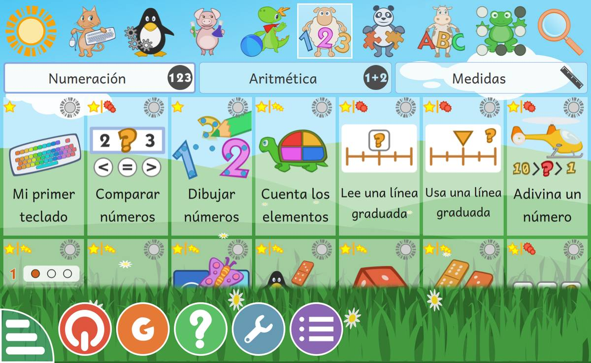
Tux Paint
Tux Paint es un programa de dibujo para niños y niñas de 3 a 12 años, con herramientas sencillas, efectos especiales y sellos de animales, plantas y objetos que se colocan con un clic. Un pingüino da las instrucciones y dice el nombre de lo que se elige. Funciona en GNU/Linux, Windows, Mac y Android.

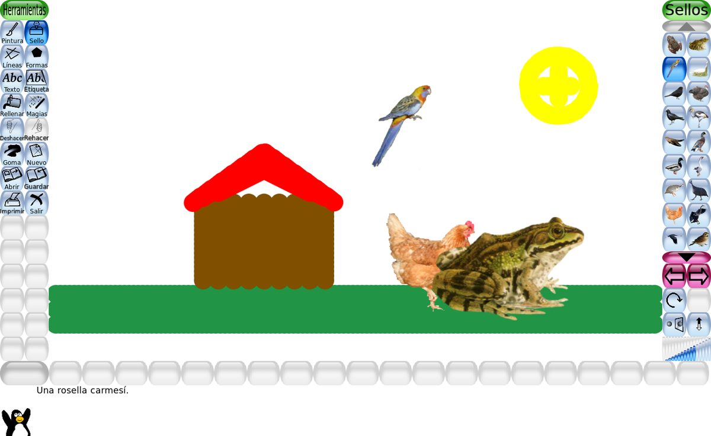
Matemáticas
Para Secundaria y Bachillerato se proponen dos programas que se complementan: GeoGebra, el más extendido en las aulas, y wxMaxima, completamente libre. Para el cálculo en Primaria, GCompris, que se presenta más arriba en «Infantil y primeros cursos», tiene actividades de las cuatro operaciones.
GeoGebra
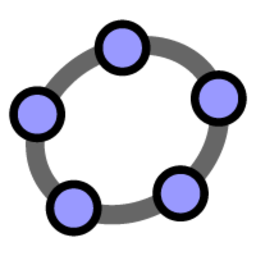
GeoGebra reúne geometría dinámica, gráficas de funciones, hoja de cálculo, cálculo simbólico, estadística y probabilidad, y sirve desde Primaria hasta la universidad. Funciona en el navegador y tiene aplicaciones para GNU/Linux, Windows, Mac, Android e iOS. Su web ofrece además una gran colección de actividades compartidas por docentes.GeoGebra es gratuito para el profesorado y el alumnado, pero no es software libre. Su código se publica con licencia libre, pero los instaladores y la web solo pueden usarse sin fines comerciales, y la propia GeoGebra reconoce en su página de licencia que el programa, en su conjunto, no se consideraría libre. Además, al entrar en su web pide permiso para compartir datos con más de mil empresas asociadas, la mayoría de publicidad; ese permiso se puede rechazar desde las opciones del aviso.

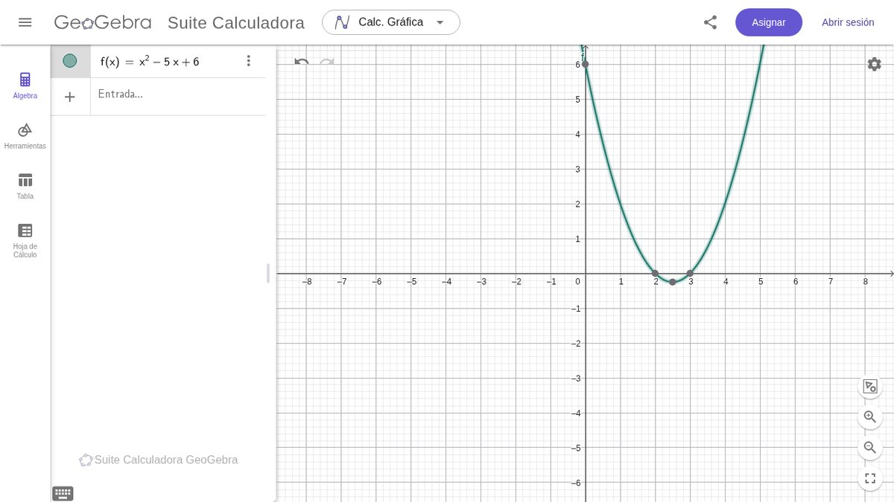
wxMaxima
wxMaxima es la interfaz gráfica de Maxima, un programa libre de cálculo simbólico con una larga trayectoria. Resuelve ecuaciones, simplifica expresiones, deriva, integra y dibuja funciones en dos y tres dimensiones. Cada orden se escribe en una celda y el resultado aparece debajo, como en un cuaderno, y los menús ayudan a construir las órdenes sin saberlas de memoria.
Funciona en GNU/Linux, Windows y Mac, con la interfaz en castellano, y resulta útil sobre todo en Bachillerato.

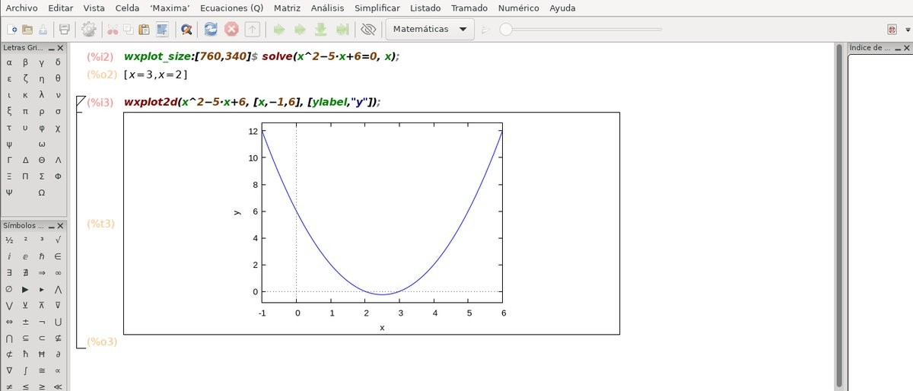
Lengua
Para lengua se recoge un programa con una finalidad muy concreta: mejorar la fluidez lectora.
Katalekto
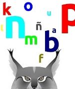
Katalekto, de Gontzal Uriarte, ayuda a mejorar la fluidez lectora, sobre todo del alumnado con dificultades como la dislexia. Muestra palabras o textos que aparecen y se tapan a la velocidad que se elija, medida en palabras por minuto, y permite preparar ejercicios con las sílabas y estructuras que se quieran trabajar.Trabaja en castellano y en euskera, es software libre (GPL) y tiene versiones para GNU/Linux y Windows.

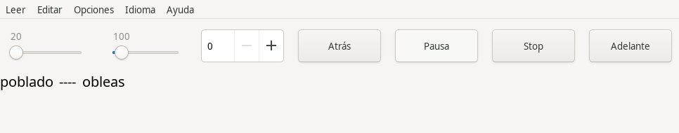
Música
Los dos programas de esta sección sirven para escribir música y también para escucharla.
TuxGuitar
TuxGuitar es un editor y reproductor de partituras y tablaturas. Está pensado sobre todo para la guitarra, pero admite cualquier instrumento. Abre los archivos de Guitar Pro y MIDI, lo que facilita aprovechar las muchas tablaturas que circulan en Internet.
Su autor original dejó el proyecto y hoy lo mantiene su comunidad, que publica versiones para GNU/Linux, Windows, Mac y Android. Tiene licencia LGPL.

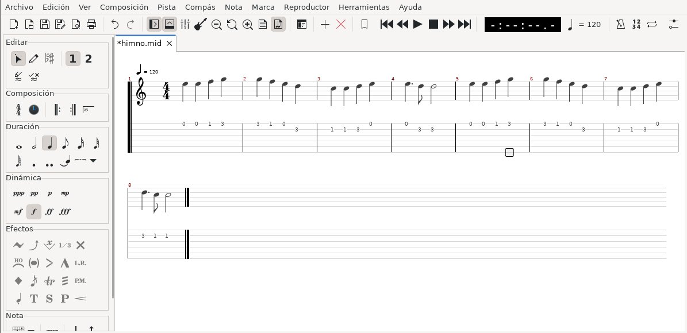
MuseScore Studio
MuseScore Studio es un programa de notación musical con el que se escriben partituras y se escuchan mientras se editan. Tiene plantillas para muchas agrupaciones, importa y exporta MusicXML y MIDI, guarda en PDF y es software libre (GPL).
Su web propone por defecto descargarlo junto con MuseHub, un instalador de la empresa que lo desarrolla y que añade sonidos y servicios propios. No hace falta: la misma página ofrece también la descarga del programa solo.

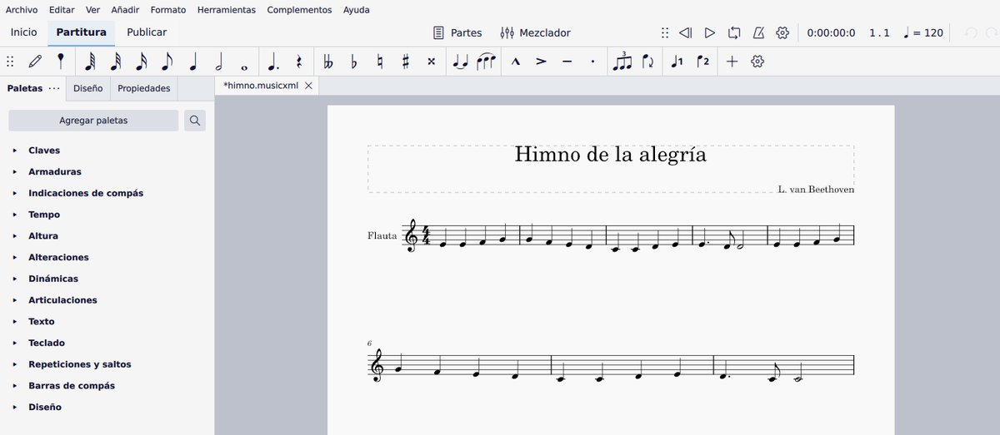
Geografía
Muchos mapas y servicios de Internet se basan en un proyecto de mapas libres, OpenStreetMap, del que también se sirven los programas de esta sección.
OpenStreetMap
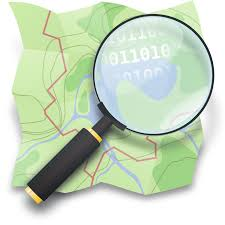
OpenStreetMap es un mapa del mundo que construyen y actualizan miles de personas voluntarias, con datos de uso libre. Se consulta como cualquier mapa en línea, permite calcular rutas y exportar zonas, y cualquiera puede registrarse para corregir o completar lo que conoce. Sus datos sirven de base a numerosas aplicaciones y servicios web.
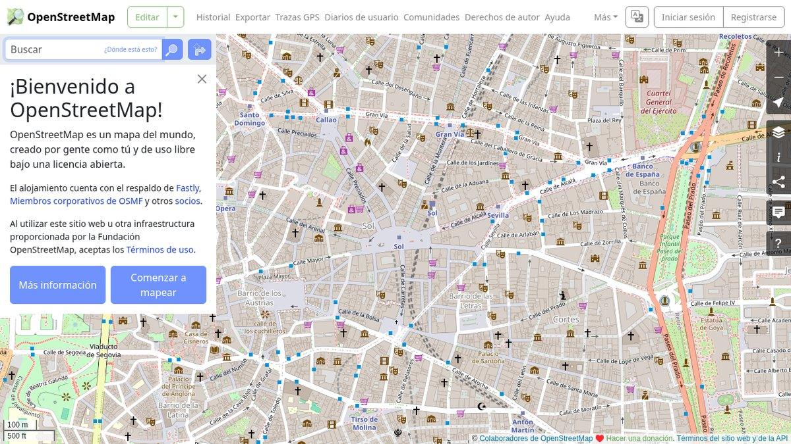
City Roads
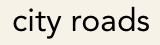
City Roads dibuja todas las calles de una ciudad, sin nombres, a partir de los datos de OpenStreetMap. El plano se puede ampliar y descargar como imagen, lo que lo hace útil para trabajos sobre la forma de las ciudades. La web está en inglés y es de código abierto (MIT).
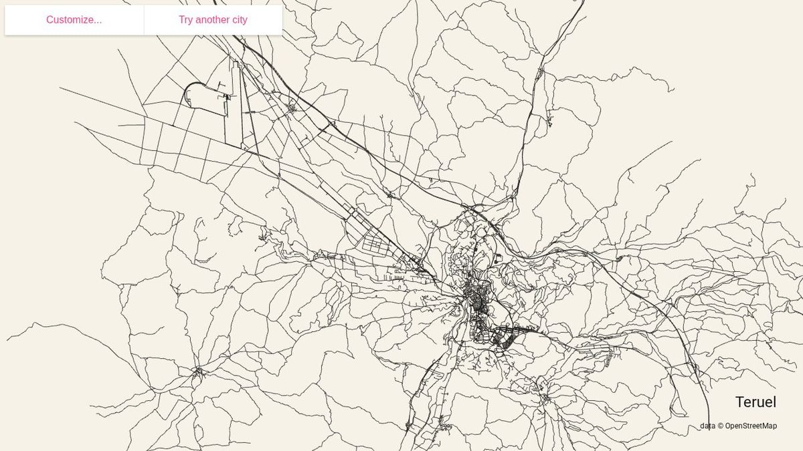
Marble
Marble, del proyecto KDE, es un globo terráqueo virtual para GNU/Linux, Windows y Mac. Ofrece varios mapas, como el topográfico, el de la Tierra de noche o el de OpenStreetMap, permite buscar lugares, calcular rutas y acercarse hasta el nivel de calle con los mapas de OpenStreetMap. Tiene licencia LGPL.

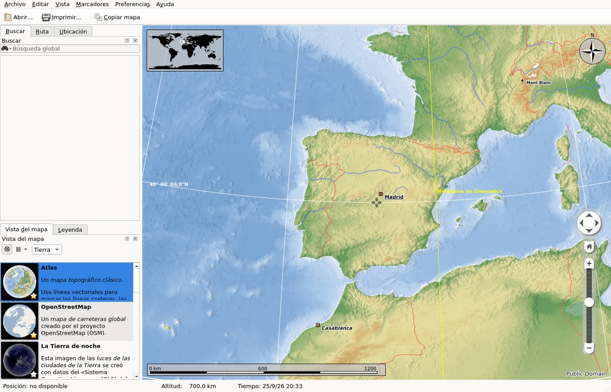
Física y química
Estos programas ayudan a medir y a ver lo que no se observa a simple vista: el movimiento de un objeto y la forma de las moléculas.
Tracker
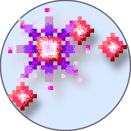
Tracker, del proyecto Open Source Physics, analiza vídeos de movimientos: una pelota lanzada, un péndulo o un coche de juguete grabados por el propio alumnado. Se marca la posición del objeto en cada fotograma y el programa calcula posiciones, velocidades y aceleraciones, y dibuja sus gráficas y tablas. Con una medida conocida en la imagen, las distancias salen en metros.Funciona en GNU/Linux, Windows y Mac, tiene la interfaz en castellano y es software libre (GPL).

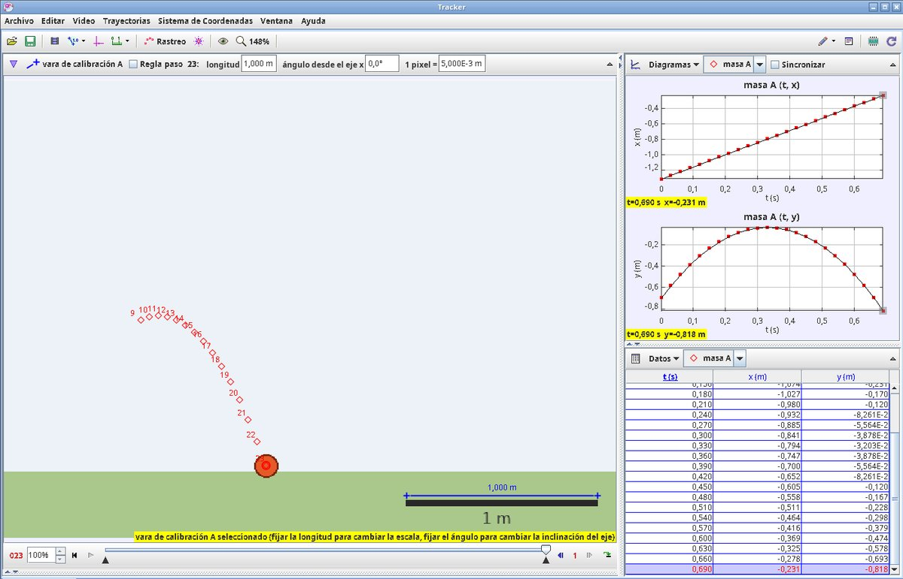
Avogadro
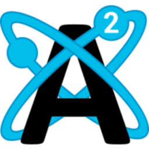
Avogadro es un editor de moléculas en tres dimensiones. Permite construirlas átomo a átomo o abrirlas desde muchos formatos, girarlas, medir distancias y ángulos, y verlas como bolas y varillas o como superficies. Resulta útil sobre todo en Bachillerato.Funciona en GNU/Linux, Windows y Mac, con la interfaz en castellano, y es software libre.

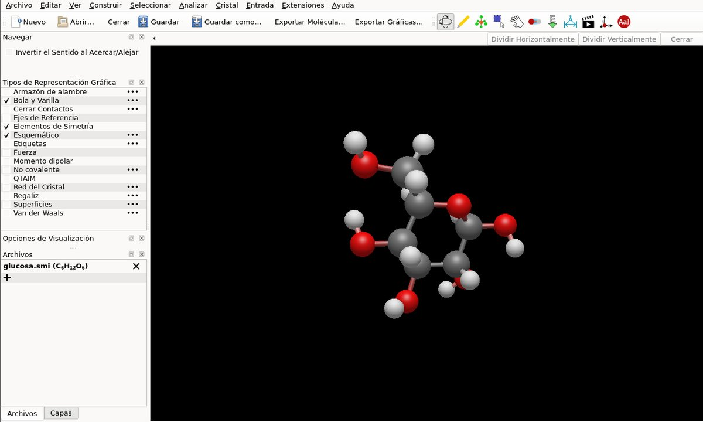
Biología
Reconocer los seres vivos del entorno es una de las primeras tareas de la biología, y el móvil puede ayudar en las salidas al campo. Para la genética, un simulador permite resolver cruces y ver cómo se heredan los caracteres.
Seek
Seek, del proyecto de ciencia ciudadana iNaturalist, identifica plantas, animales y hongos apuntándolos con la cámara del móvil. Muestra el nombre de la especie, o del grupo si no puede afinar más, y propone retos para descubrir especies nuevas. Funciona en Android e iOS, en castellano, y no pide registrarse.
El código de la aplicación es libre (MIT), pero el modelo que reconoce las especies no lo es: iNaturalist mantiene privado el modelo completo y solo publica uno reducido. La identificación, eso sí, se hace en el propio móvil.

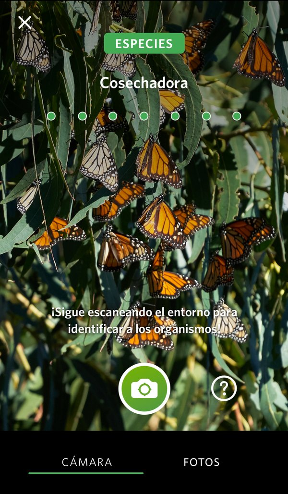
MendelSim
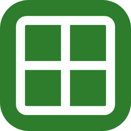
MendelSim es un simulador de genética que funciona en el navegador. Resuelve cruces monohíbridos y dihíbridos, herencia ligada al sexo y pedigríes, y muestra el cuadro de Punnett, las proporciones de genotipos y fenotipos y la explicación de cada paso. Sirve tanto para explicar en la pizarra como para que el alumnado practique. Está en castellano, catalán e inglés, con el código bajo licencia AGPL y los contenidos bajo CC BY-SA 4.0.
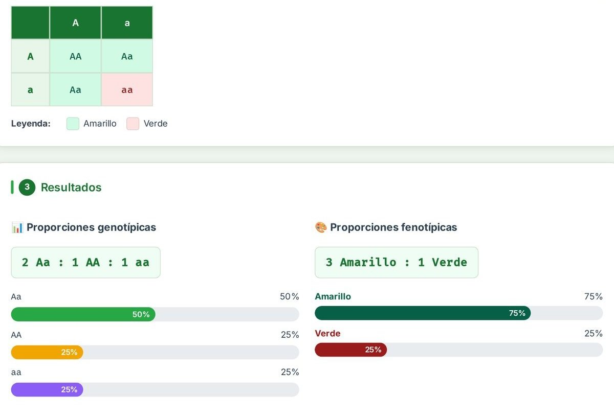
Astronomía
Se proponen dos programas complementarios. Stellarium muestra el cielo tal como se ve desde un lugar de la Tierra, y Celestia permite viajar entre planetas y estrellas.
Stellarium
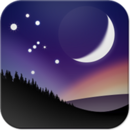
Stellarium es un planetario para el ordenador: muestra el cielo de cualquier lugar, fecha y hora, con estrellas, planetas, constelaciones y sus figuras, y abundante información de cada objeto. Sirve para preparar una observación o para explicar por qué el cielo cambia a lo largo de la noche y del año.Funciona en GNU/Linux, Windows y Mac, en castellano, y es software libre (GPL). Existe también Stellarium Web, una versión para el navegador, en inglés.

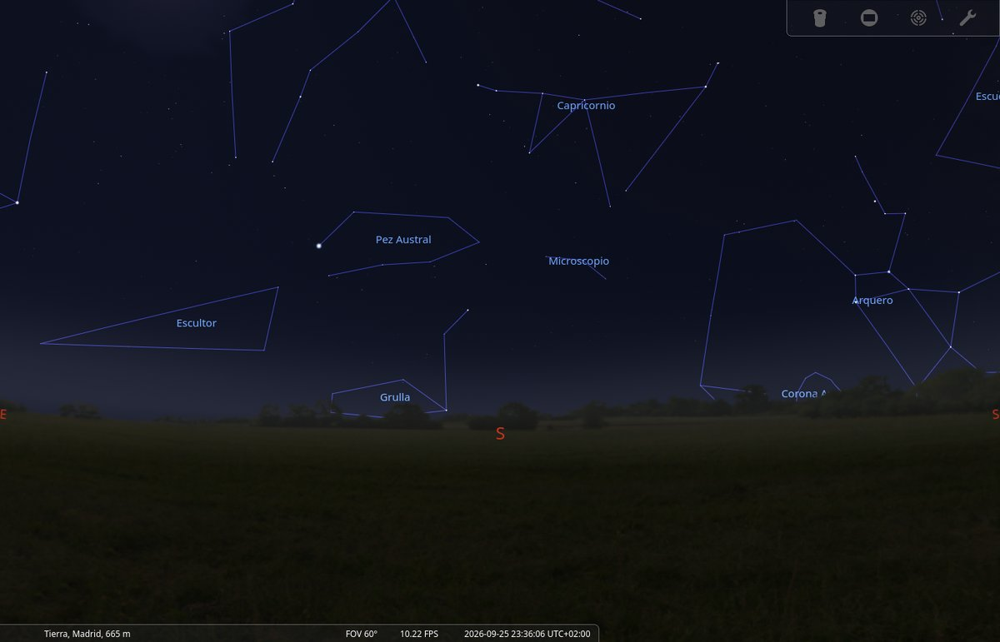
Celestia
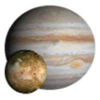
Celestia permite explorar el universo en tres dimensiones: acercarse a cualquier planeta, satélite, estrella o galaxia y ver sus datos. Funciona en GNU/Linux, Windows, Mac, Android e iOS, y es software libre (GPL). Los datos que muestra están en castellano, aunque los menús de la versión para GNU/Linux aparecen en inglés.
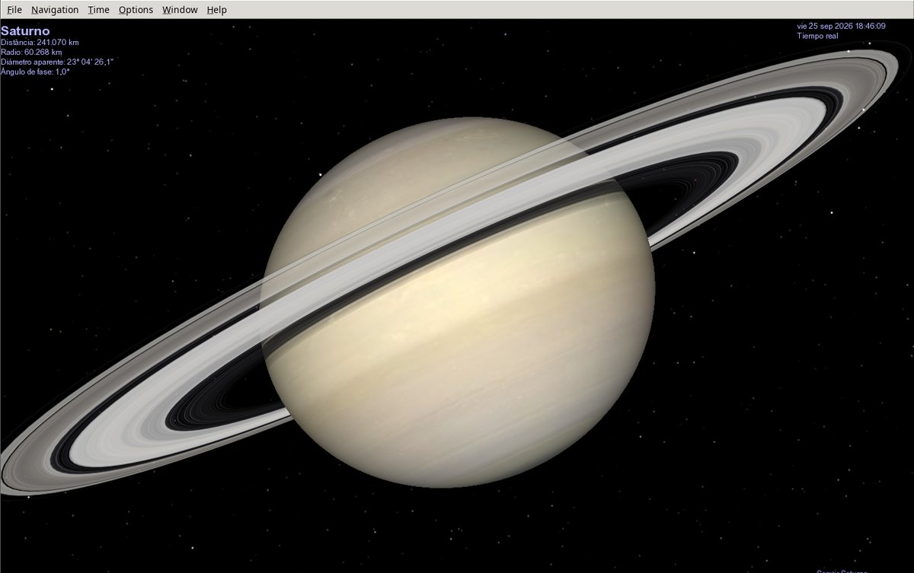
Diseño 2D y 3D
Para el dibujo técnico y el diseño de piezas hay dos programas libres consolidados: LibreCAD para planos en dos dimensiones y FreeCAD para modelos en tres.
LibreCAD
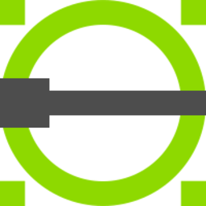
LibreCAD dibuja planos en dos dimensiones con líneas, arcos, cotas, capas y bloques, y trabaja con el formato DXF, que leen la mayoría de programas de CAD. Su manejo recuerda al de AutoCAD. Funciona en GNU/Linux, Windows y Mac, en castellano, y es software libre (GPL).
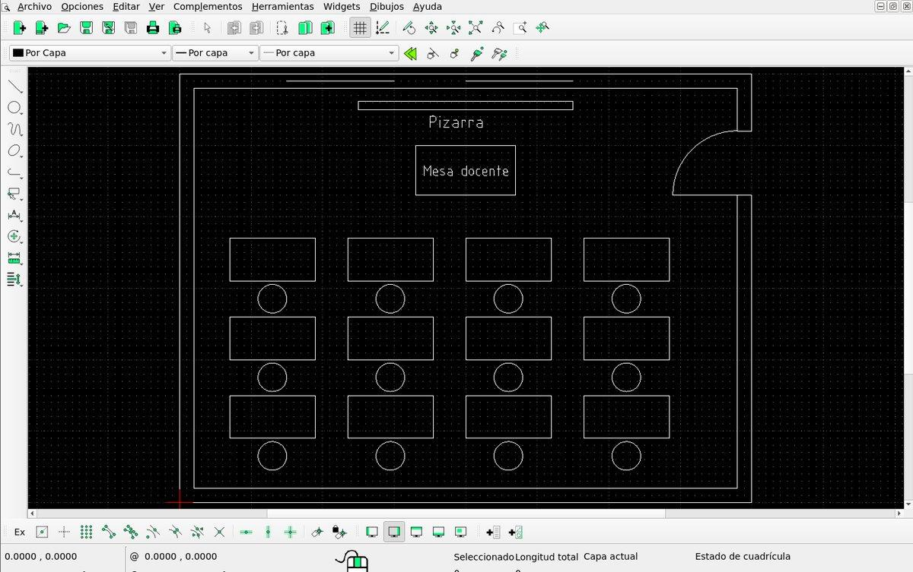
FreeCAD
FreeCAD sirve para diseñar objetos reales en tres dimensiones, desde piezas sencillas hasta mecanismos o edificios, y exportarlos para imprimirlos en 3D. Los modelos se construyen a partir de bocetos con medidas exactas, que se pueden cambiar después. Funciona en GNU/Linux, Windows y Mac, en castellano, y es software libre (LGPL).

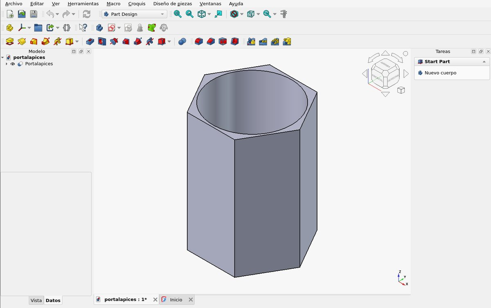
Programación


Electrónica
Un simulador permite montar y probar circuitos en el ordenador antes de construirlos, o sin necesidad de tener los componentes. Para programar después las placas Arduino reales está su propio entorno, Arduino IDE.
SimulIDE
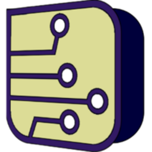
SimulIDE es un simulador de circuitos electrónicos en tiempo real pensado para estudiantes. Los componentes se colocan y se conectan con el ratón, y al poner en marcha la simulación el circuito funciona: los LED se encienden, los motores giran y el osciloscopio muestra las señales. Incluye microcontroladores como los de Arduino, que se pueden programar desde el propio programa.Trae muchos circuitos de ejemplo, funciona en GNU/Linux, Windows y Mac, con la interfaz en castellano, y es software libre.

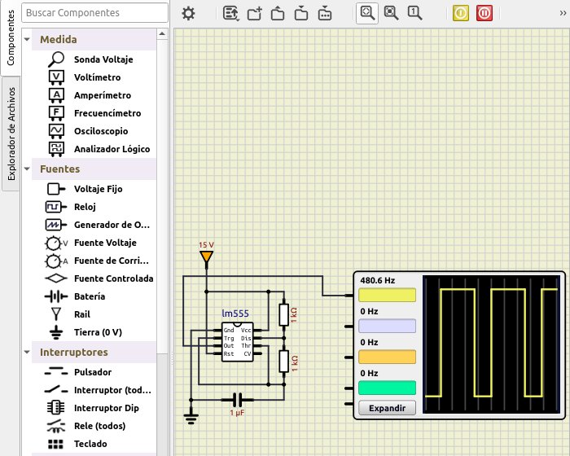
Arduino IDE
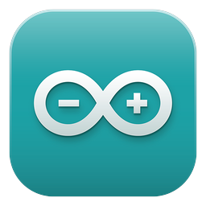
Arduino IDE es el entorno oficial para programar las placas Arduino, muy extendidas en Tecnología para proyectos de electrónica y robótica. En él se escribe el programa, se comprueba y se carga en la placa conectada por USB. Trae numerosos ejemplos y un monitor que muestra los datos que envía la placa.Funciona en GNU/Linux, Windows y Mac, se puede poner en castellano desde sus preferencias y tiene licencia AGPL.

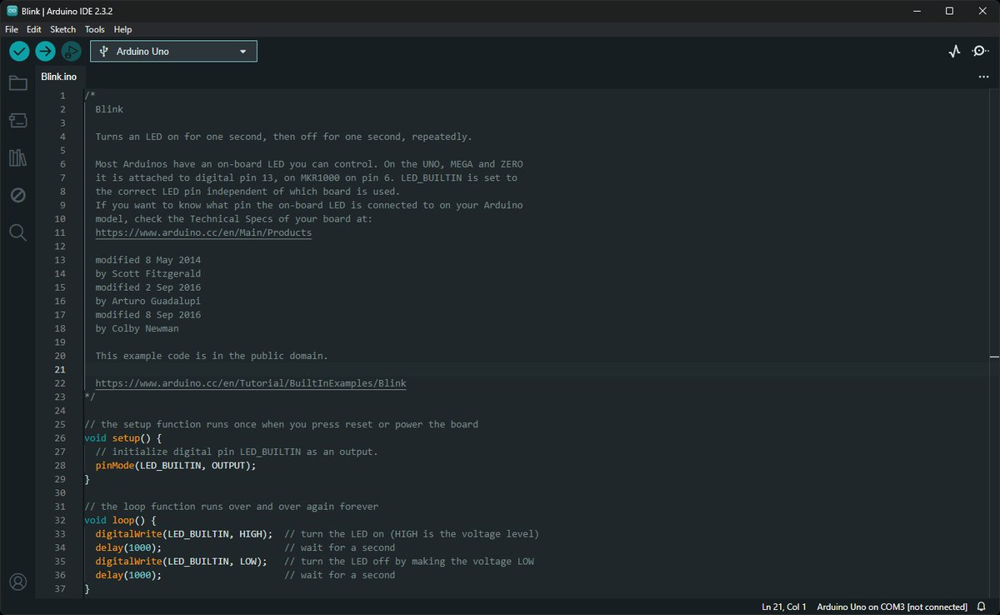